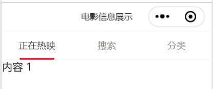

当我们在一个小程序中想要查看某些信息，总是以页面顶部的一个导航栏展示出来，点击该导航栏上的各个标签则会出现对应页面内容。而如何实现顶部的标签导航栏，并展示其中内容呢？

在json中引入tab组件。
{
"usingComponents": {
"van-tab": "/dist/tab/index",
"van-tabs": "/dist/tabs/index"
}
}
在van-tabs标签中加入bind:change事件；通过active设定当前激活标签对应的索引值，默认情况下启用第一个标签。wxml代码如下：
<van-tabs active="{{ active }}" bind:change="onChange">
<van-tab title="正在热映">内容 1</van-tab>
<van-tab title="搜索">内容 2</van-tab>
<van-tab title="分类">内容 3</van-tab>
</van-tabs>
在js中，配置onChange条件函数。
Page({
data: {
active: 1
},
onChange(event) {
wx.showToast({
title: `切换到标签 ${event.detail.name}`,
icon: 'none'
});
}
})
在设置一个信息展示页面时，用顶部标签导航让我们的页面跳转更便捷。同样我们可以在页面中设置我们需要的内容。